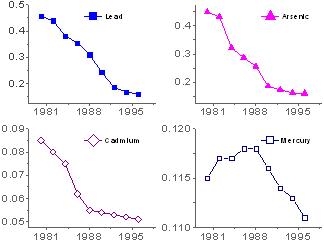
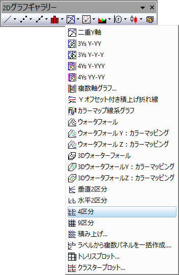

4区分
4Panel-Graph
- 
要求されるデータ
少なくとも1つのY列、あるいは、その部分領域を選択する必要があります。 観念的には、4つまたはそれ以上のY列（あるいは、Y列内の部分範囲）を選択します。 関連付けられたX列がある場合はそれを使用し、そうでない場合は、Y列または行番号のサンプリング間隔が使用されます。
4区分グラフでは、4列より多いX列は必要ありません。
- X列が1つだけの場合、この列が全区分グラフで使用され、4つのレイヤに同じXに対するそれぞれのY値が作図されます。プロットの配置の規則は、すべてのY列を1つずつ順番にレイヤにプロットすることです。
- 2つ以上のX列がある場合、X列はY列をグループに分割するための区切り記号として使用され、Y列のこれらのグループは隣接するXデータに対して順番にレイヤにプロットされます。
- 4つ以上のX列がある場合、4区分グラフをプロットすることはできません。
グラフ作成
データを選択します。
を選択します。
または、
「2Dグラフギャラリー」ツールバーの「4区分」ボタン をクリックします。
- 
テンプレート
PAN4.OTP (Originのプログラムフォルダにインストールされています。)
ノート
- 各列のY値は別々のレイヤにプロットされます。 レイヤは２列×２行に配置されています。
- Origin 2018bから、作図の詳細のレイヤタブにある共通の表示を使用して、複数レイヤグラフのレイヤ、プロット、軸プロパティを一括で設定できます。詳細情報は、(作図の詳細)レイヤタブの設定を参照してください。